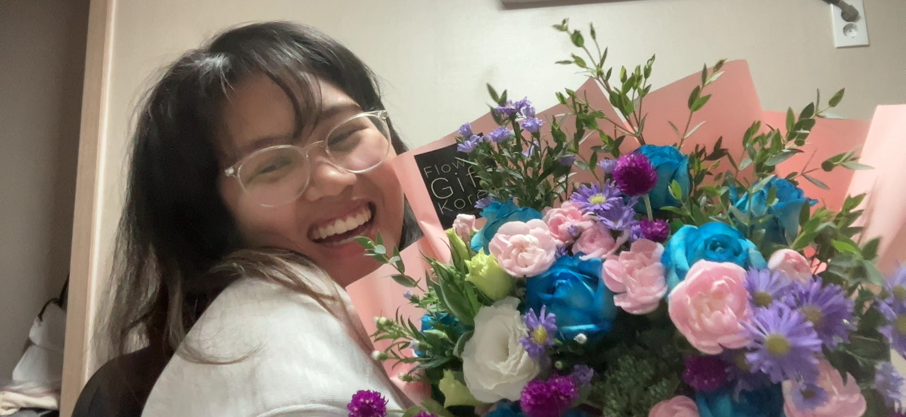

Our 1 Year Anniversary!

HAPPY ONE YEAR BABY!!

HAPPY ONE YEAR BABY!!
It is CRAZY how fast the year has flown by with you! I remember it was just a year ago that I asked you if you wanted to be my girlfriend hahaha. You've always asked when did I know I love you. I knew I loved you because every time I get a text from you or when we talk I get this nice warm fuzzy feeling inside of me. I still get that feeling every time we talk or text! 
Its been a year so let's take a trip down memory lane for the memorable moments for us in the past year!
Our First Date!
Of course our first date at CoCo Ichibanya! I was so shy and nervous because you're so pretty and nice to me. I didn't know I would be taking my future girlfriend out on a date that day. I remember our exact order, I ordered the chicken katsu with less rice and you ordered the pork katsu curry. Then afterward I was exposed as a swiftie and went to get ice cream at  Wonderlust but the line was too long so we went to Handel's instead. And on the way back we sang to the songs from my throwback playlists hahaha.
Santa Monica Date
Our date at Santa Monica! I remember I was so excited to take you out to Santa Monica because, on our first date, you said you always wanted to visit there. We went to the LACMA and looked at all the artwork together and made silly comments about them. I wish we would've told the guy to take a picture of us at the pier because that would've been a nice picture to have. It was also the first day we held hands and had our first kiss!

Barbie Movie!
That was a fun date! We went to GUI BBQ and got boba before we went to the movie theater to watch the Barbie movie. What happened after was even more fun!¬† üòÄ
Our OC Date
We went to OCMA and explored the exhibit there! We took some silly pictures too and I remember I loved hearing you laugh so much. And I always will!

Before you flew back day
Remember when I took a day off of work to spend the day with you before you flew back? That was a day to remember hehe. We went to Vox Kitchen where we had the best garlic noodles and steak bites! Then we went to the OC fair where we thought we still had it in us to ride the scary rides. Afterward, we went to... (you know the rest hahaha)
Asking you to be my girlfriend!
Probably the MOST important day of our relationship! I was so nervous and scared that I was moving too fast. But I knew I wanted you to be my girlfriend and I wanted to make it official. I'm glad I did!!
Booking my flight to you!
I think this was a very pivotal moment in our new and delicate relationship because I knew it meant a lot for you to know that you were able to see me again soon.
Your letters üíó
I want you to know how much appreciate the letters you write me. It makes me so warm inside receiving and reading them. I read them when I'm feeling down or when I miss you. I love you so much, baby!
My first flowers to you! üíê
I know now you don't like flowers but I knew you liked them when I got it for you for the first time. Seeing your beautiful face light up when you got them made me so happy!
Korea!!
Korea is hands down the best trip I've taken in my life thanks to you! When I first saw you at the airport I felt nervous again because you looked drop-dead beautiful. It was nice of you wanting to put a love lock with me hahaha and enduring the North Korean tunnels with me. And we also spent our first Christmas together!! But above all else, I get to hold and wake up next to the love of my life (you)!
My Birthday
You bought me a cake and a REALLY nice polo shirt! I cried a little when you and my parents started to sing Happy Birthday to me. I feel so lucky to have someone as caring and sweet as you in my life.
Our Calls Together
Having you a part of my every day made me realize how much better you make my day. I mean it when I didn't know I could be this happy and feel complete because of you. Thank you for staying up for me while I drive to work. I hope we can continue having these silly calls when you have your work schedule laid out.
Our 1 Year!
I can't believe it's been a year since we made it official! I've only listed above a very few moments we had together but if I could list all of them it would be an entire multi page application! I'm so happy to have you in my life and I can't wait to see what the future holds for us. Thanks again for being there for me and putting up with my kulit for the past year. I can't wait to see you in a week! Thanks again for being my best friend, my equal, and my girlfriend!
I love you Mags! Happy 1 year! üíû
your buh üßà,
Namanh üíó